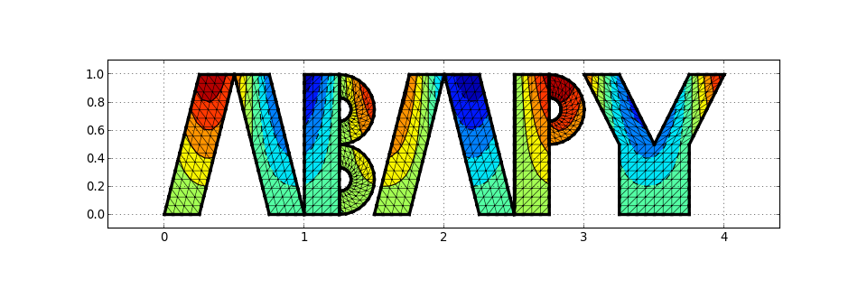

Abapy Documentation
- Abaqus Python “AbaPy” contains tools to build, postprocess and plot automatic finite element simulations using Abaqus. It is divided into four parts:
- mesh: contains finite element mesh utilities allowing building, modifying, ploting and exporting to various formats.
- postproc: contains utilities to read in Abaqus odb files and represent history and field outputs using custom classes. These classes allow easy calculations, export, storage (using pickle/cPickle).
- materials: contains functions to preprocess materials before finite element simulations.
- indentation: contains all indentation dedicated tools.
- advanced_examples: contains examples using abapy and other python packages to perform research higher level tasks.
(Source code, png, hires.png, pdf)

Code author: Ludovic Charleux <ludovic.charleux@univ-savoie.fr>
- Installation can be performed easily by:
- Dirty method: copy the whole spym directory in the directory as your script using it, it will work. In fact Python first looks for modules in the current directory. This method
- Better method:
- copying the module where you want to.
- add the module directory to python module search path by creating a .profile file in your home directory and containing export PYTHONPATH=path. Where path is the absolute address of the directory containing the abapy directory.
Contents:
{kind=link}
{kind=link}